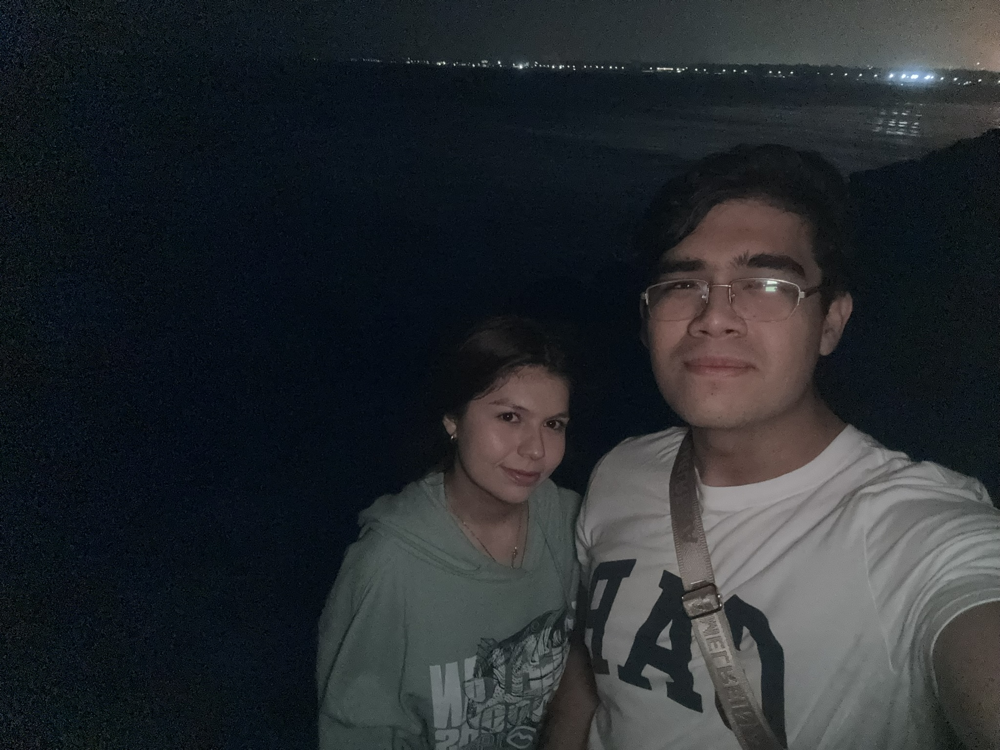
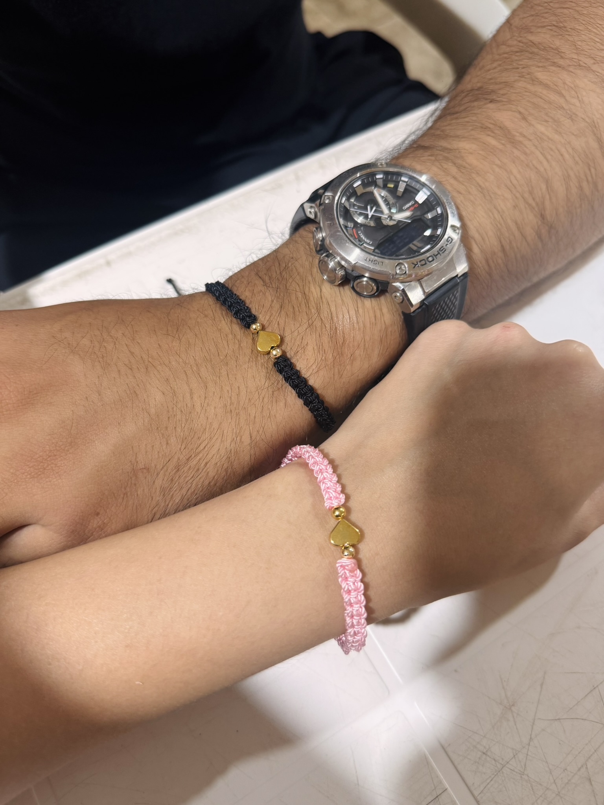

Nuestros Primeros Recuerdos

Donde todo empezó

Nuestro primer mes

Y los que faltan...
Esta será nuestra página web, un espacio solamente de nosotros que contendrá todos nuestros recuerdos acerca de nuestra bonita relación.
Desliza hacia abajo ↓Ese día en la playa, que fue más que una simple salida, terminamos conociéndonos por completo y pude ser yo mismo sin temor a que te alejaras de mí.
Desde esos días que comenzamos con las llamadas y mensajes más a menudo, se sentía que ibas encajando en mi día a día.
Me encantan tus ojos y cada día que los veo sigo pensando que son los que quiero para mis hijos.
Los gestos, los mensajes, las risas por las tonterías que digo y hago... cada pequeño detalle que tienes conmigo me hace sentir amado y valorado.
Me encanta que a través de ti he podido conocer algo nuevo para mí: el tener una mascota. Amo la manera en la que expresas tu amor por los animales.
Contigo puedo ser yo mismo y hablar de todo lo que siento y cómo lo siento. Genuinamente eres el lugar que más paz me trae; eres mi hogar dentro de todo el caos de mi vida.


Mi amor, Hoy que cumplimos nuestro primer mes, quería darte algo diferente, algo que se quedara con nosotros. Así que hice este pequeño rincón en internet solo para ti y para mí. Me hace mucha ilusión pensar que a medida que pase el tiempo, podremos ir agregando más razones, más fotos y más recuerdos a esta página. Gracias por este mes tan bonito, por las risas, por la confianza y por hacerme tan feliz. Feliz primer mes. ❤️